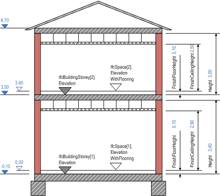

5.4.3.64 IfcSpace
5.4.3.64.1 Semantic definition
A space represents an area or volume bounded actually or theoretically. Spaces are areas or volumes that provide for certain functions within a building.
A space is associated to a building storey (or in case of exterior spaces to a site). A space may span over several connected spaces. Therefore a space group provides for a collection of spaces included in a storey. A space can also be decomposed in parts, where each part defines a partial space. This is defined by the CompositionType attribute of the supertype IfcSpatialStructureElement which is interpreted as follow:
- COMPLEX = space group
- ELEMENT = space
- PARTIAL = partial space
Figure A shows the IfcSpace as part of the spatial structure. It also serves as the spatial container for space related elements.

The following guidelines should apply for using the Name, Description, LongName and ObjectType attributes.
- Name holds the unique name (or space number) from the plan.
- Description holds any additional information field the user may have specified, there are no further recommendations.
- LongName holds the full name of the space, it is often used in addition to the Name, if a number is assigned to the room, then the descriptive name is exchanged as LongName.
- ObjectType holds the space type, i.e. usually the functional category of the space .
Figure B describes the heights and elevations of the IfcSpace.
- elevation of the space (top of construction slab) equals elevation of storey: provided by IfcBuildingStorey.Elevation relative to IfcBuilding.ElevationOfRefHeight
- elevation of the space flooring (top of flooring on top of slab): provided by IfcSpace.ElevationWithFlooring relative to IfcBuilding.ElevationOfRefHeight
- height of space (top of slab below to bottom of slab above): provided by BaseQuantity with Name="Height"
- floor height of space (top of slab below to top of flooring): provided by BaseQuantity with Name="FinishFloorHeight"
- net height of space (top of flooring to bottom of suspended ceiling): provided by BaseQuantity with Name="FinishCeilingHeight"

5.4.3.64.2 Entity inheritance
5.4.3.64.3 Attributes
| # | Attribute | Type | Description |
|---|---|---|---|
| IfcRoot (4) | |||
| 1 | GlobalId | IfcGloballyUniqueId |
Assignment of a globally unique identifier within the entire software world. |
| 2 | OwnerHistory | OPTIONAL IfcOwnerHistory |
Assignment of the information about the current ownership of that object, including owning actor, application, local identification and information captured about the recent changes of the object. |
| 3 | Name | OPTIONAL IfcLabel |
An optional name for use by the participating software systems or users. For some subtypes of IfcRoot the insertion of the Name attribute may be required. This would be enforced by a where rule. |
| 4 | Description | OPTIONAL IfcText |
An optional description, provided to exchange informative comments. |
| IfcObjectDefinition (7) | |||
| Decomposes | SET [0:1] OF IfcRelAggregates FOR RelatedObjects |
References to the decomposition relationship being an aggregation. It determines that this object definition is a part within an unordered whole/part decomposition relationship. An object definition can only be part of a single decomposition (to allow hierarchical structures only). |
|
| HasAssignments | SET [0:?] OF IfcRelAssigns FOR RelatedObjects |
Reference to the relationship objects, that assign (by an association relationship) other subtypes of IfcObject to this object instance. Examples are the association to products, processes, controls, resources or groups. |
|
| HasAssociations | SET [0:?] OF IfcRelAssociates FOR RelatedObjects |
Reference to the relationship objects, that associates external references or other resource definitions to the object. Examples are the association to library, documentation or classification. |
|
| HasContext | SET [0:1] OF IfcRelDeclares FOR RelatedDefinitions |
References to the context providing context information such as project unit or representation context. It should only be asserted for the uppermost non-spatial object. |
|
| IsDecomposedBy | SET [0:?] OF IfcRelAggregates FOR RelatingObject |
References to the decomposition relationship being an aggregation. It determines that this object definition is the whole within an unordered whole/part decomposition relationship. An object definition can be aggregated by several other objects (occurrences or parts). |
|
| IsNestedBy | SET [0:?] OF IfcRelNests FOR RelatingObject |
References to the decomposition relationship being a nesting. It determines that this object definition is the whole within an ordered whole/part decomposition relationship. An object or object type can be nested by several other objects (occurrences or types). |
|
| Nests | SET [0:1] OF IfcRelNests FOR RelatedObjects |
References to the decomposition relationship being a nesting. It determines that this object definition is a part within an ordered whole/part decomposition relationship. An object occurrence or type can only be part of a single decomposition (to allow hierarchical structures only). |
|
| IfcObject (5) | |||
| 5 | ObjectType | OPTIONAL IfcLabel |
The type denotes a particular type that indicates the object further. The use has to be established at the level of instantiable subtypes. In particular it holds the user defined type, if the enumeration of the attribute PredefinedType is set to USERDEFINED or when the concrete entity instantiated does not have a PredefinedType attribute. The latter is the case in some exceptional leaf classes and when instantiating IfcBuiltElement directly. |
| Declares | SET [0:?] OF IfcRelDefinesByObject FOR RelatingObject |
Link to the relationship object pointing to the reflected object(s) that receives the object definitions. The reflected object has to be part of an object occurrence decomposition. The associated IfcObject, or its subtypes, provides the specific information (as part of a type, or style, definition), that is common to all reflected instances of the declaring IfcObject, or its subtypes. |
|
| IsDeclaredBy | SET [0:1] OF IfcRelDefinesByObject FOR RelatedObjects |
Link to the relationship object pointing to the declaring object that provides the object definitions for this object occurrence. The declaring object has to be part of an object type decomposition. The associated IfcObject, or its subtypes, contains the specific information (as part of a type, or style, definition), that is common to all reflected instances of the declaring IfcObject, or its subtypes. |
|
| IsDefinedBy | SET [0:?] OF IfcRelDefinesByProperties FOR RelatedObjects |
Set of relationships to property set definitions attached to this object. Those statically or dynamically defined properties contain alphanumeric information content that further defines the object. |
|
| IsTypedBy | SET [0:1] OF IfcRelDefinesByType FOR RelatedObjects |
Set of relationships to the object type that provides the type definitions for this object occurrence. The then associated IfcTypeObject, or its subtypes, contains the specific information (or type, or style), that is common to all instances of IfcObject, or its subtypes, referring to the same type. |
|
| IfcProduct (5) | |||
| 6 | ObjectPlacement | OPTIONAL IfcObjectPlacement |
This establishes the object coordinate system and placement of the product in space. The placement can either be absolute (relative to the world coordinate system), relative (relative to the object placement of another product), or constrained (e.g. relative to grid axes, or to a linear positioning element). The type of placement is determined by the various subtypes of IfcObjectPlacement. An object placement must be provided if a representation is present. |
| 7 | Representation | OPTIONAL IfcProductRepresentation |
Reference to the representations of the product, being either a representation (IfcProductRepresentation) or as a special case of a shape representation (IfcProductDefinitionShape). The product definition shape provides for multiple geometric representations of the shape property of the object within the same object coordinate system, defined by the object placement. |
| PositionedRelativeTo | SET [0:?] OF IfcRelPositions FOR RelatedProducts |
Reference to the IfcRelPositions relationship, which defines its relationship with a positioning element. |
|
| ReferencedBy | SET [0:?] OF IfcRelAssignsToProduct FOR RelatingProduct |
Reference to the IfcRelAssignsToProduct relationship, by which other products, processes, controls, resources or actors (as subtypes of IfcObjectDefinition) can be related to this product. |
|
| ReferencedInStructures | SET [0:?] OF IfcRelReferencedInSpatialStructure FOR RelatedElements |
Reference to the objectified relationship IfcRelReferencedInSpatialStructure may be used to relate a product to one or more spatial structure elements in addition to the one in which it is primarily contained. |
|
| IfcSpatialElement (6) | |||
| 8 | LongName | OPTIONAL IfcLabel |
Long name for a spatial structure element, used for informal purposes. It should be used, if available, in conjunction with the inherited Name attribute. |
| ContainsElements | SET [0:?] OF IfcRelContainedInSpatialStructure FOR RelatingStructure |
Set of spatial containment relationships, that holds those elements, which are contained within this element of the project spatial structure. |
|
| InterferesElements | SET [0:?] OF IfcRelInterferesElements FOR RelatingElement |
Reference to the interference relationship to indicate the spatial element that interferes. The relationship, if provided, indicates that this spatial element has an interference with one or many other spatial elements. |
|
| IsInterferedByElements | SET [0:?] OF IfcRelInterferesElements FOR RelatedElement |
Reference to the interference relationship to indicate the spatial element that is interfered. The relationship, if provided, indicates that this spatial element has an interference with one or many other spatial elements. |
|
| ReferencesElements | SET [0:?] OF IfcRelReferencedInSpatialStructure FOR RelatingStructure |
Set of spatial reference relationships, that holds those elements, which are referenced, but not contained, within this element of the project spatial structure. |
|
| ServicedBySystems | SET [0:?] OF IfcRelServicesBuildings FOR RelatedBuildings |
Set of relationships to systems, that provides a certain service to the spatial element for which it is defined. The relationship is handled by the objectified relationship IfcRelServicesBuildings. |
|
| IfcSpatialStructureElement (1) | |||
| 9 | CompositionType | OPTIONAL IfcElementCompositionEnum |
Denotes, whether the predefined spatial structure element represents itself, or an aggregate (complex) or a part (part). The interpretation is given separately for each subtype of spatial structure element. If no CompositionType is asserted, the default value ''ELEMENT'' applies. |
| Click to show 28 hidden inherited attributes Click to hide 28 inherited attributes | |||
| IfcSpace (4) | |||
| 10 | PredefinedType | OPTIONAL IfcSpaceTypeEnum |
Predefined generic types for a space that are specified in an enumeration. There might be property sets defined specifically for each predefined type. |
| 11 | ElevationWithFlooring | OPTIONAL IfcLengthMeasure |
Level of flooring of this space; the average shall be taken, if the space ground surface is sloping or if there are level differences within this space. |
| BoundedBy | SET [0:?] OF IfcRelSpaceBoundary FOR RelatingSpace |
Reference to a set of IfcRelSpaceBoundary's that defines the physical or virtual delimitation of that space against physical or virtual boundaries. |
|
| HasCoverings | SET [0:?] OF IfcRelCoversSpaces FOR RelatingSpace |
Reference to IfcCovering by virtue of the objectified relationship IfcRelCoversSpaces. It defines the concept of a space having coverings assigned. Those coverings may represent different flooring, or tiling areas. |
|
5.4.3.64.4 Formal propositions
| Name | Description |
|---|---|
| CorrectPredefinedType |
Either the PredefinedType attribute is unset (e.g. because an IfcSpaceType is associated), or the inherited attribute ObjectType shall be provided, if the PredefinedType is set to USERDEFINED. |
|
|
| CorrectTypeAssigned |
Either there is no space type object associated, i.e. the IsTypedBy inverse relationship is not provided, or the associated type object has to be of type IfcSpaceType. |
|
|
5.4.3.64.5 Formal representation
ENTITY IfcSpace
SUBTYPE OF (IfcSpatialStructureElement);
PredefinedType : OPTIONAL IfcSpaceTypeEnum;
ElevationWithFlooring : OPTIONAL IfcLengthMeasure;
INVERSE
BoundedBy : SET [0:?] OF IfcRelSpaceBoundary FOR RelatingSpace;
HasCoverings : SET [0:?] OF IfcRelCoversSpaces FOR RelatingSpace;
WHERE
CorrectPredefinedType : NOT(EXISTS(PredefinedType)) OR
(PredefinedType <> IfcSpaceTypeEnum.USERDEFINED) OR
((PredefinedType = IfcSpaceTypeEnum.USERDEFINED) AND EXISTS (SELF\IfcObject.ObjectType));
CorrectTypeAssigned : (SIZEOF(IsTypedBy) = 0) OR
('IFC4X3_DEV_53e65c5.IFCSPACETYPE' IN TYPEOF(SELF\IfcObject.IsTypedBy[1].RelatingType));
END_ENTITY;